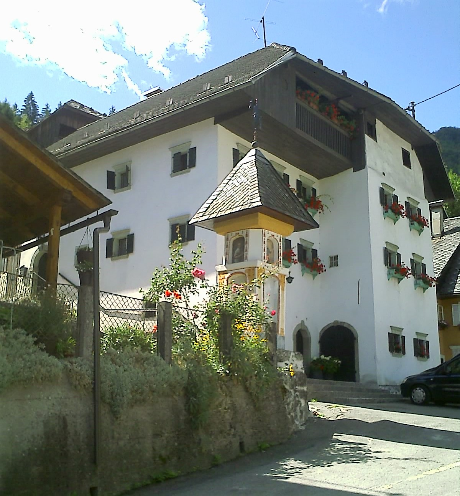
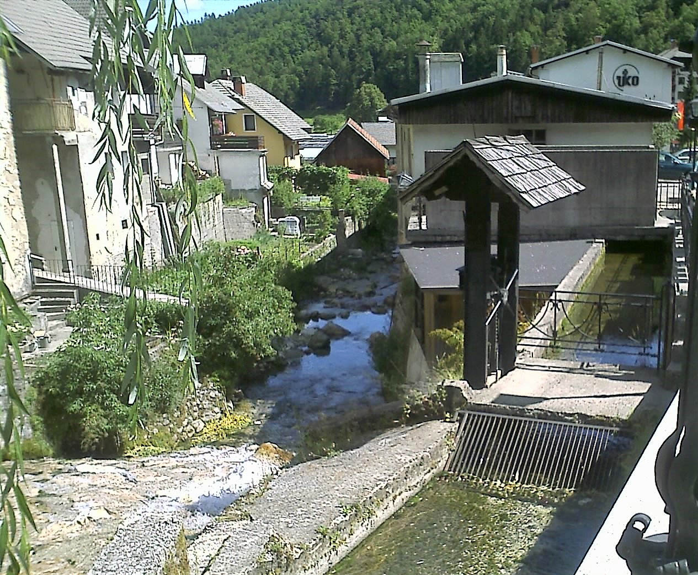
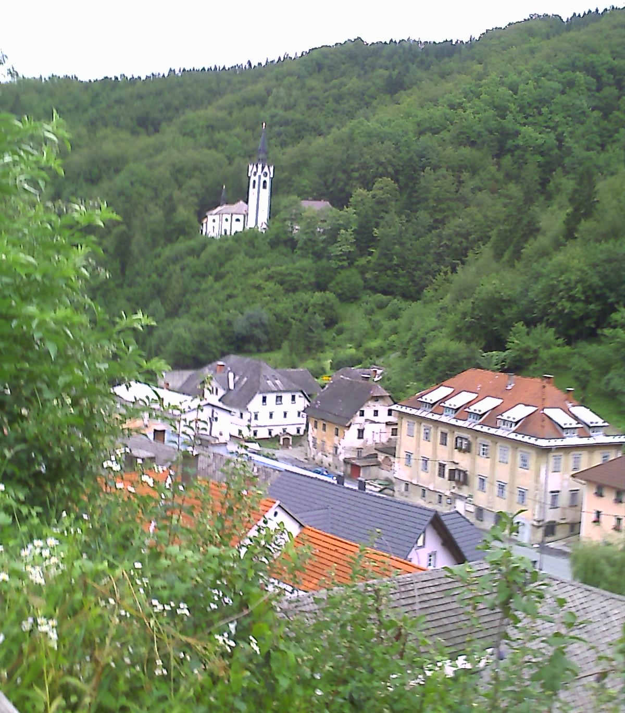
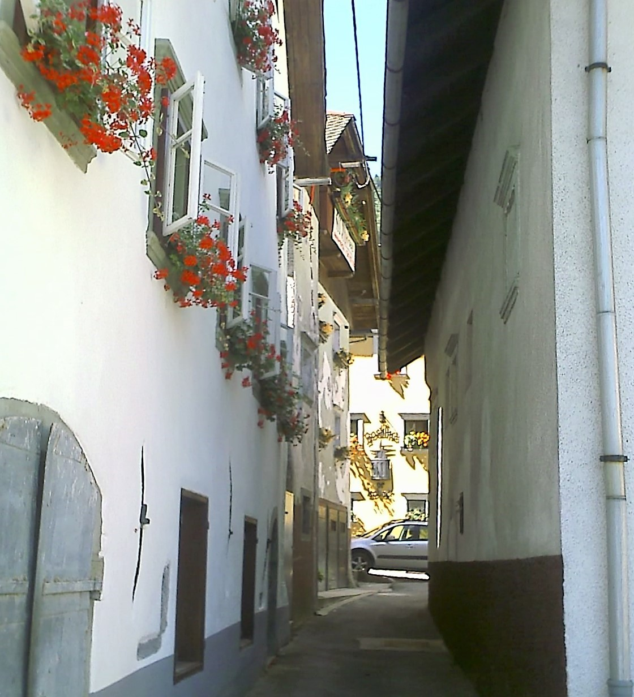
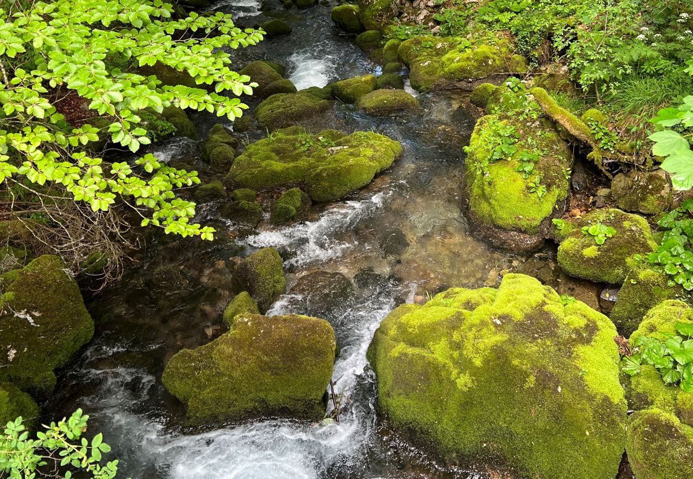
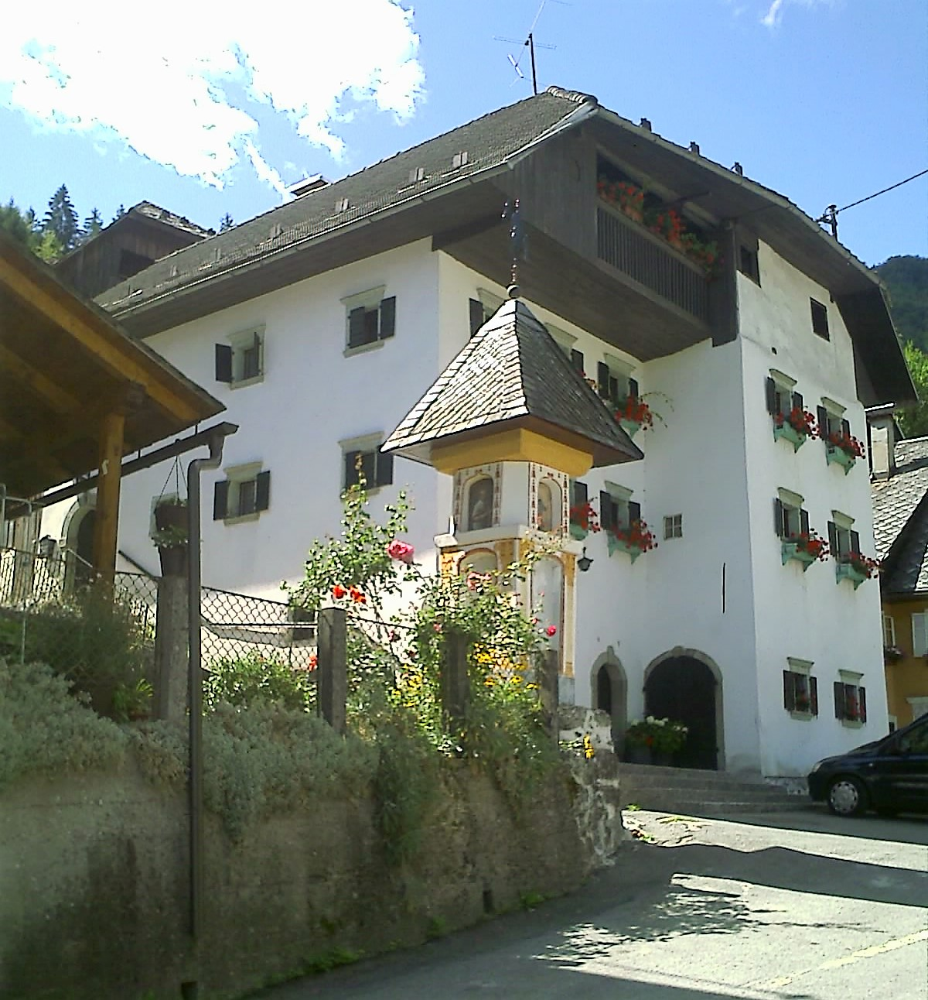
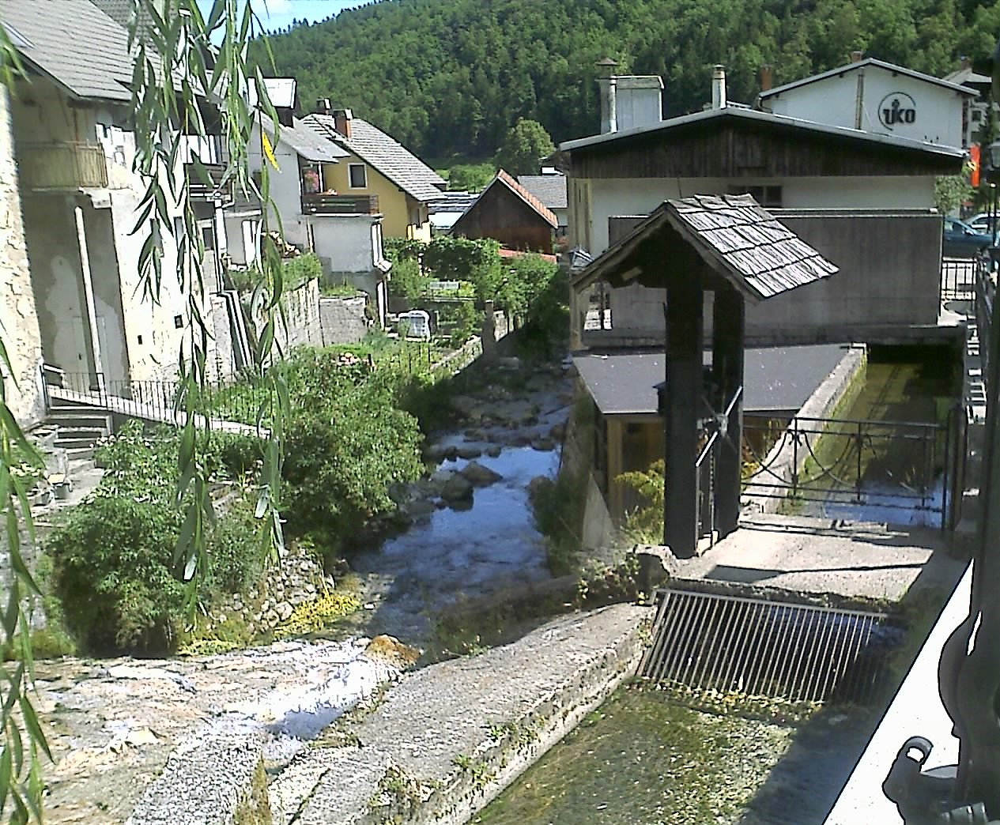
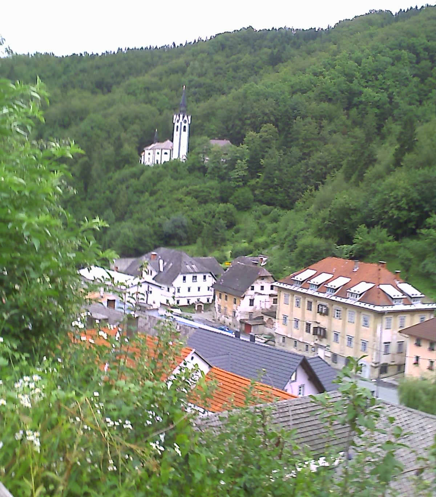
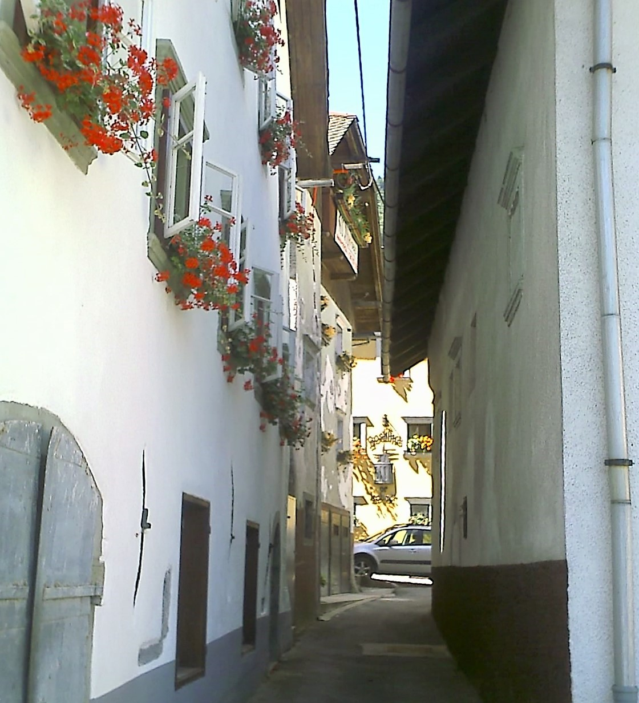
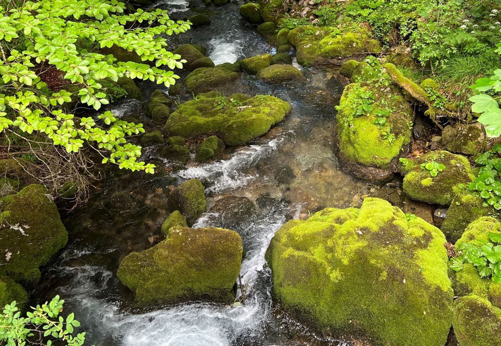

Who knew that Kropa lives such interesting life.
They say Slovenia is a little Switzerland.
The tourists come back here year after year. They are families with children, artists, cyclists ... They come here looking for the quiet tranquil place where they can escape from the pressure of their city life and live in kind of harmony with nature. And that is what Kropa gives them. The state is making every effort to preserve the uniqueness of these places.
 








